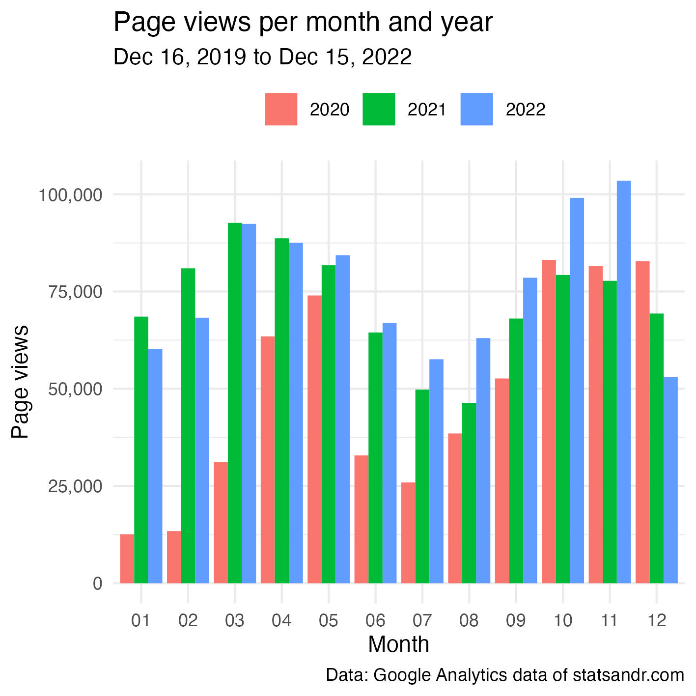
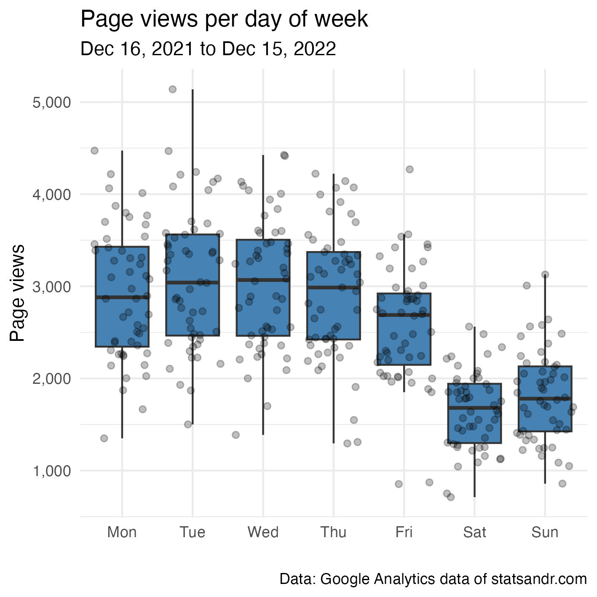

Analytics
In this section, I present some visualizations that might be useful when analyzing your GA data. Feel free to comment at the end of the post if you use other interesting visualizations.
Note that I focus on the page views metrics in this post, but you can edit my code to show other metrics as well. See the metrics available for UA and the ones for GA4.
Page views over time
Let’s start with the evolution of the number of page views over the past year, so from December 16, 2021 to December 15, 2022.
library(googleAnalyticsR)
# set date range
start_date <- as.Date("2021-12-16")
end_date <- as.Date("2022-12-15")
# extract data from both IDs
dat1 <- google_analytics(ga_id[1],
date_range = c(start_date, end_date),
metrics = "pageviews",
dimensions = "date",
anti_sample = TRUE # avoid sampling
)
dat2 <- ga_data(ga_id[2],
date_range = c(start_date, end_date),
metrics = "screenPageViews",
dimensions = "date",
limit = -1 # return all data (no limit)
)
# combine data from both IDs
library(dplyr)
dat <- full_join(dat1, dat2, by = "date")
dat$page_views <- rowSums(select(dat, pageviews, screenPageViews),
na.rm = TRUE
)
# scatter plot with a trend line
library(ggplot2)
dat %>%
ggplot(aes(x = date, y = page_views)) +
geom_point(size = 1L, color = "gray") + # change size and color of points
geom_smooth(color = "steelblue", alpha = 0.25) + # change color of smoothed line and transparency of confidence interval
theme_minimal() +
labs(
y = "Page views",
x = "",
title = "Evolution of daily page views",
subtitle = paste0(format(start_date, "%b %d, %Y"), " to ", format(end_date, "%b %d, %Y")),
caption = "Data: Google Analytics data of statsandr.com"
) +
theme(plot.margin = unit(c(5.5, 17.5, 5.5, 5.5), "pt")) + # to avoid the plot being cut on the right edge
scale_y_continuous(labels = scales::comma) # better y labels
As you can see in the code above, we need to:
- extract data from two different IDs: this is done with
google_analytics()for UA andga_data()for GA4 (with each function having its own arguments) - join data from the two IDs (with a
full_join()because even after moving to GA4, there were still some hits on UA, so I need to keep data from the 2 IDs for the entire year) - sum up the metric for both IDs (with
rowSums())
This process will be done repeatedly for each visualization.
From the plot above, we see that the number of page views follows a cyclical evolution (with a decrease during summer). This trend follows the same pattern than last year, but the increase in the last quarter of the year is larger in 2022.
Note that there seems to be consistently some days with a lower number of page views than the rest. This is actually the weekends. See more on that in this section. Note also the presence of an outlier with a number of page views above 5,000. No post has been published on that day, so it probably comes from an old post that was shared to a large audience.
Finally, summing all days give a total page views of 938,630. Last year, it was 876,280, so 2022 saw an increase of 7.12%.
Page views per month and year
Comparison of the number of page views per month for all previous years can also be useful. Below two different types of visualizations.
# set new date range to include previous years
start_date_launch <- as.Date("2019-12-16")
# extract data from both IDs
dat1 <- google_analytics(ga_id[1],
date_range = c(start_date_launch, end_date),
metrics = "pageviews",
dimensions = "date",
anti_sample = TRUE # avoid sampling
)
dat2 <- ga_data(ga_id[2],
date_range = c(start_date_launch, end_date),
metrics = "screenPageViews",
dimensions = "date",
limit = -1 # return all data (no limit)
)
# combine data from both IDs
dat <- full_join(dat1, dat2, by = "date")
dat$page_views <- rowSums(select(dat, pageviews, screenPageViews),
na.rm = TRUE
)
# add year and month columns to dataframe
dat$month <- format(dat$date, "%m")
dat$year <- format(dat$date, "%Y")
# page views by month by year using dplyr then graph using ggplot2 barplot
dat %>%
filter(year != 2019) %>% # remove 2019 because there are data for December only
group_by(year, month) %>%
summarize(page_views = sum(page_views)) %>%
ggplot(aes(x = month, y = page_views, fill = year)) +
geom_bar(position = "dodge", stat = "identity") +
theme_minimal() +
labs(
y = "Page views",
x = "Month",
title = "Page views per month and year",
subtitle = paste0(format(start_date_launch, "%b %d, %Y"), " to ", format(end_date, "%b %d, %Y")),
caption = "Data: Google Analytics data of statsandr.com",
fill = "" # remove legend title
) +
theme(legend.position = "top") + # change legend position
scale_y_continuous(labels = scales::comma) # better y labels
Another possibility is as follows:
dat2 <- dat
library(lubridate)
dat2$day <- day(dat2$date)
dat2$day_month <- as.Date(paste0(dat2$month, "-", dat2$day), format = "%m-%d")
dat2 %>%
filter(year != 2019 & page_views < 7500) %>% # remove 2019 and outliers
ggplot(aes(x = day_month, y = page_views, color = year)) +
geom_point(size = 1L, alpha = 0.25) + # change size and alpha of points
geom_smooth(se = FALSE) + # remove confidence interval
theme_minimal() +
labs(
y = "Page views",
x = "",
title = "Evolution of daily page views",
subtitle = paste0(format(start_date_launch, "%b %d, %Y"), " to ", format(end_date, "%b %d, %Y")),
caption = "Data: Google Analytics data of statsandr.com",
color = "" # remove legend title
) +
theme(legend.position = "top") + # change legend position
scale_y_continuous(labels = scales::comma) + # better y labels
scale_x_date(date_labels = "%b") # show only months
From the 2 plots above, we see that the blog globally performed better in terms of page views compared to 2020-2021 (with an exception in the first quarter for which it performed better in 2021).
Note that a comparison between 3 years is fine, but with more years to compare the plots would quickly become unreadable!
Top performing pages
In case you are interested to know the top performing pages (still in terms of page views):
# extract data from both IDs
dat1 <- google_analytics(ga_id[1],
date_range = c(start_date, end_date),
metrics = "pageviews",
dimensions = "pageTitle",
anti_sample = TRUE # avoid sampling
)
dat2 <- ga_data(ga_id[2],
date_range = c(start_date, end_date),
metrics = "screenPageViews",
dimensions = "pageTitle",
limit = -1 # return all data (no limit)
)
# combine data from both IDs
dat <- full_join(dat1, dat2, by = "pageTitle")
dat$page_views <- rowSums(select(dat, pageviews, screenPageViews),
na.rm = TRUE
)
## Create a table of the most viewed posts
library(lubridate)
library(reactable)
library(stringr)
most_viewed_posts <- dat %>%
mutate(Title = str_sub(pageTitle, start = 1, end = -nchar(" - Stats and R"))) %>% # remove blog site in pageTitle
count(Title, wt = page_views, sort = TRUE) %>%
mutate(Title = str_trunc(Title, width = 30)) # keep maximum 30 characters
# plot
top_n(most_viewed_posts, n = 7, n) %>% # edit n for more or less pages to display
ggplot(., aes(x = reorder(Title, n), y = n)) +
geom_bar(stat = "identity", fill = "steelblue") +
theme_minimal() +
coord_flip() +
labs(
y = "Page views",
x = "Page title",
title = "Top performing pages",
subtitle = paste0(format(start_date, "%b %d, %Y"), " to ", format(end_date, "%b %d, %Y")),
caption = "Data: Google Analytics data of statsandr.com"
) +
scale_y_continuous(labels = scales::comma) # better y labels
Top performing posts are quite similar than last year, that is:
- Descriptive statistics in R
- Outliers detection in R
- Correlation coefficient and correlation test in R
- ANOVA in R
- Chi-square test of independence in R
Since they are the most read posts for several years, I have made them available to download via Gumroad.
Page views by country
Knowing from which country your readers come from can also be useful, in particular for e-commerce or blogs that sell physical products in addition to writing posts.
# extract data from both IDs
dat1 <- google_analytics(ga_id[1],
date_range = c(start_date, end_date),
metrics = "pageviews",
dimensions = "country",
anti_sample = TRUE # avoid sampling
)
dat2 <- ga_data(ga_id[2],
date_range = c(start_date, end_date),
metrics = "screenPageViews",
dimensions = "country",
limit = -1 # return all data (no limit)
)
# combine data from both IDs
dat <- full_join(dat1, dat2, by = "country")
dat$page_views <- rowSums(select(dat, pageviews, screenPageViews),
na.rm = TRUE
)
# table
countries <- dat %>%
mutate(Country = str_trunc(country, width = 30)) %>% # keep maximum 30 characters
count(Country, wt = pageviews, sort = TRUE)
# plot
top_n(countries, n = 10, n) %>% # edit n for more or less countries to display
ggplot(., aes(x = reorder(Country, n), y = n)) +
geom_bar(stat = "identity", fill = "steelblue") +
theme_minimal() +
coord_flip() +
labs(
y = "Page views",
x = "Country",
title = "Top performing countries",
subtitle = paste0(format(start_date, "%b %d, %Y"), " to ", format(end_date, "%b %d, %Y")),
caption = "Data: Google Analytics data of statsandr.com"
) +
scale_y_continuous(labels = scales::comma) + # better y labels
theme(plot.margin = unit(c(5.5, 7.5, 5.5, 5.5), "pt")) # to avoid the plot being cut on the right edge
For Stats and R, most readers are from the US, and to a large extent since the second top country (UK) is quite far in terms of page views.
This trend is the same than last years, except that:
- UK has surpassed India, and
- Belgium (which used to rank 3rd and 6th in 2020 and 2021, respectively) is now only 8th. Since I am from Belgium, this indicates that the blog is attracting more and more international readers through the years (and proportionally less and less from my country).
Page views per day of week
As discussed in the section about the evolution of daily page views (view this section), there seem to be some days which consistently perform worse than other days.
The following plot will show what are these days:
# extract data from both IDs
dat1 <- google_analytics(ga_id[1],
date_range = c(start_date, end_date),
metrics = "pageviews",
dimensions = c("date"),
anti_sample = TRUE # avoid sampling
)
dat2 <- ga_data(ga_id[2],
date_range = c(start_date, end_date),
metrics = "screenPageViews",
dimensions = c("date"),
limit = -1 # return all data (no limit)
)
# combine data from both IDs
dat <- full_join(dat1, dat2, by = "date")
dat$page_views <- rowSums(select(dat, pageviews, screenPageViews),
na.rm = TRUE
)
# find day of week
dat$weekday <- wday(dat$date, label = TRUE, abbr = TRUE)
## Reordering dat$weekday so Monday is first
dat$weekday <- factor(dat$weekday,
levels = c("Mon", "Tue", "Wed", "Thu", "Fri", "Sat", "Sun")
)
# boxplot
library(scales)
dat %>%
ggplot(aes(x = weekday, y = page_views)) +
geom_boxplot(fill = "steelblue", outlier.colour = alpha(0.25)) +
geom_jitter(alpha = 0.25) + # adds transparency
theme_minimal() +
labs(
y = "Page views",
x = "",
title = "Page views per day of week",
subtitle = paste0(format(start_date, "%b %d, %Y"), " to ", format(end_date, "%b %d, %Y")),
caption = "Data: Google Analytics data of statsandr.com"
) +
scale_y_continuous(labels = scales::comma) # better y labels
As expected for a technical blog, there are much more readers during the week than during the weekend.